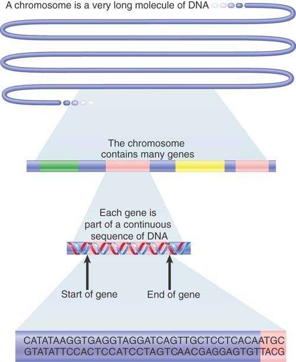
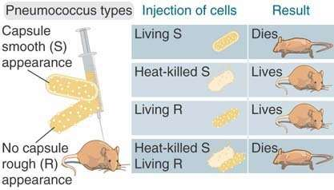

The hereditary basis of every living organism is its genome, a long sequence of deoxyribonucleic acid (DNA) that provides the complete set of hereditary information carried by the organism as well as its individual cells. The genome includes chromosomal DNA as well as DNA in plasmids and (in eukaryotes) organellar DNA, as found in mitochondria and chloroplasts. We use the term information because the genome does not itself perform an active role in the development of the organism. Rather, the products of expression of nucleotide sequences within the genome determine development. By a complex series of interactions, the DNA sequence directs production of all of the ribonucleic acids (RNAs) and proteins of the organism at the appropriate time and within the appropriate cells. Proteins serve a diverse series of roles in the development and functioning of an organism: they can form part of the structure of the organism; have the capacity to build the structure; perform the metabolic reactions necessary for life; and participate in regulation as transcription factors, receptors, key players in signal transduction pathways, and other molecules.
Physically, the genome can be divided into a number of different DNA molecules, or chromosomes. The ultimate definition of a genome is the sequence of the DNA of each chromosome. Functionally, the genome is divided into genes. Each gene is a sequence of DNA that encodes a single type of RNA and, in many cases, ultimately a polypeptide. Each of the discrete chromosomes comprising the genome can contain a large number of genes. Genomes for living organisms might contain as few as about 500 genes (for mycoplasma, a type of bacterium), about 20,000 for humans, or as many as about 50,000 to 60,000 for rice.
In this chapter, we explore the gene in terms of its basic molecular construction and basic function. FIGURE 1.1 summarizes the stages in the transition from the historical concept of the gene to the modern definition of the genome.

FIGURE 1.1 A brief history of genetics.
The first definition of the gene as a functional unit followed from the discovery that individual genes are responsible for the production of specific proteins. Later, the chemical differences between the DNA of the gene and its protein product led to the suggestion that a gene encodes a protein. This, in turn, led to the discovery of the complex apparatus by which the DNA sequence of a gene determines the amino acid sequence of a polypeptide.
Understanding the process by which a gene is expressed allows us to make a more rigorous definition of its nature. FIGURE 1.2 shows the basic theme of this book. A gene is a sequence of DNA that directly produces a single strand of another nucleic acid, RNA, with a sequence that is (at least initially) identical to one of the two polynucleotide strands of DNA. In many cases, the RNA is in turn used to direct production of a polypeptide. In other cases, such as ribosomal RNA (rRNA) and transfer RNA (tRNA) genes, the RNA transcribed from the gene is the functional end product. Thus, a gene is a sequence of DNA that encodes an RNA, and in proteincoding, or structural, genes, the RNA in turn encodes a polypeptide.

FIGURE 1.2 A gene encodes an RNA, which can encode a polypeptide.
The gene is the functional unit of heredity. Each gene is a sequence within the genome that functions by giving rise to a discrete product, which can be a polypeptide or an RNA. The basic pattern of inheritance of a gene was proposed by Mendel nearly 150 years ago. Summarized in his two major principles of segregation and independent assortment, the gene was recognized as a "particulate factor" that passes largely unchanged from parent to progeny. A gene can exist in alternative forms, called alleles.
In diploid organisms (having two sets of chromosomes), one of each chromosome pair is inherited from each parent. This is the same pattern of inheritance that is displayed by genes. One of the two copies of each gene is the paternal allele (inherited from the father); the other is the maternal allele (inherited from the mother). The shared pattern of inheritance of genes and chromosomes led to the discovery that chromosomes in fact carry the genes.
Each chromosome consists of a linear array of genes, and each gene resides at a particular location on the chromosome. The location is more formally called a genetic locus. The alleles of a gene are the different forms that are found at its locus. Although generally there are up to two alleles per locus in a diploid individual, a population might have many alleles of a single gene.
The key to understanding the organization of genes into chromosomes was the discovery of genetic linkage—the tendency for genes on the same chromosome to remain together in the progeny instead of assorting independently as predicted by Mendel’s principle. After the unit of recombination (reassortment) was introduced as the measure of linkage, the construction of genetic maps became possible. The recombination frequency between loci is proportional to the physical distance between the loci.
The resolution of the recombination map of a multicellular eukaryote is restricted by the small number of progeny that can be obtained from each mating. Recombination occurs so infrequently between nearby points that it is rarely observed between different variable sites in the same gene. As a result, classic linkage maps of eukaryotes can place the genes in order but cannot resolve the locations of variable sites within a gene. By using a microbial system in which a very large number of progeny can be obtained from each genetic cross, researchers could demonstrate that recombination occurs within genes and that it follows the same rules as those for recombination between genes.
Variable nucleotide sites among alleles of a gene can be arranged into a linear order, showing that the gene itself has the same linear construction as the array of genes on a chromosome. In other words, the genetic map is linear within, as well as between, loci as an unbroken sequence of nucleotides. This conclusion leads naturally to the modern view summarized in FIGURE 1.3 that the genetic material of a chromosome consists of an uninterrupted length of DNA representing many genes. Having defined the gene as an uninterrupted length of DNA, it should be noted that in eukaryotes many genes are interrupted by sequences in the DNA that are then excised from the messenger RNA (mRNA) (see the chapter titled The Interrupted Gene). Furthermore, there are regions of DNA that control the timing and pattern of expression of genes that can be located some distance from the gene itself.
FIGURE 1.3 Each chromosome consists of a single, long molecule of DNA within which are the sequences of individual genes.
From the demonstration that a gene consists of DNA, and that a chromosome consists of a long stretch of DNA representing many genes, we will move to the overall organization of the genome. In the chapter titled The Interrupted Gene, we take up in more detail the organization of the gene and its representation in proteins. In the chapter titled The Content of the Genome, we consider the total number of genes, and in the chapter titled Clusters and Repeats, we discuss other components of the genome and the maintenance of its organization.
KEY CONCEPTS
The idea that the genetic material of organisms is DNA has its roots in the discovery of transformation by Frederick Griffith in 1928. The bacterium Streptococcus (formerly Pneumococcus) pneumoniae kills mice by causing pneumonia. The virulence of the bacterium is determined by its capsular polysaccharide, which allows the bacterium to escape destruction by its host. Several types of S. pneumoniae have different capsular polysaccharides, but they all have a smooth “S” appearance. Each of the S types can give rise to variants that fail to produce the capsular polysaccharide and therefore have a rough “R” surface (consisting of the material that was beneath the capsular polysaccharide). The R types are avirulent and do not kill the mice, because the absence of the polysaccharide capsule allows the animal's immune system to destroy the bacteria.
When S bacteria are killed by heat treatment, they can no longer harm the animal. FIGURE 1.4, however, shows that when heatkilled S bacteria and avirulent R bacteria are jointly injected into a mouse, it dies as the result of a pneumonia infection. Virulent S bacteria can be recovered from the mouse’s blood.
FIGURE 1.4 Neither heat-killed S-type nor live R-type bacteria can kill mice, but simultaneous injection of both can kill mice just as effectively as the live S type.